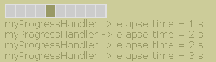

examples
examples$Date$
 Introduction
IntroductionThis example requires :
This example will run a basic ProgressBar in indeterminate mode (without monitor) until it reached a limit-level (elapse time > 12 seconds).
Actions to wait are allowed by user callback myProgressHandler defined on lines 20 to 41.
This callback is attached on progress bar at line 61. If you forget to do that, default will be to wait, done by HTML_Progress::sleep() method.
[Top]
 Render options
Render options background-color = #e0e0e0
color = #996 background-color = #CCCC99
active-color = #996
speed = 200 increment = 10
[Top]
 Output
Output
[Top]
 PHP source syntax highlight
PHP source syntax highlight[Top]
 Play demo
Play demoRun the script.
[Top]